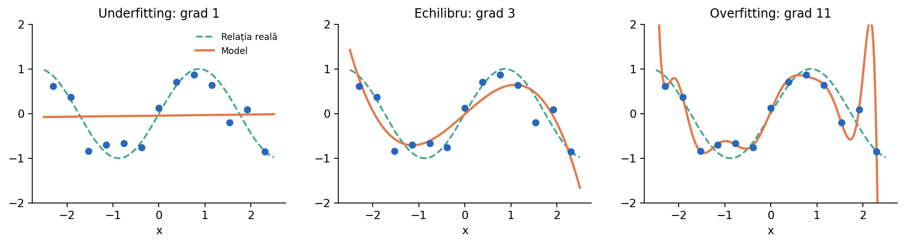

De ce poate un model să obțină 100% pe datele de antrenare și totuși să greșească atunci când vede exemple noi? Această lecție leagă capacitatea modelului, zgomotul, validarea și scorurile publice/finale din competiții.
Separăm eroarea pe train de eroarea pe validation. Dacă ambele sunt mari, modelul poate fi prea simplu (underfitting); dacă train este excelent și validation slabă, avem un semnal de overfitting. Acestea sunt indicii, nu diagnostice automate: un set de validare nepotrivit poate induce în eroare.

Cauze: model prea restrictiv, caracteristici insuficiente, regularizare excesivă, antrenare insuficientă sau o reprezentare defectuoasă a intrărilor. Remedii posibile: caracteristici relevante, model mai flexibil, scăderea regularizării ori optimizarea antrenării — verificând fiecare modificare pe validare.
from sklearn.linear_model import LinearRegression from sklearn.preprocessing import PolynomialFeatures from sklearn.pipeline import make_pipeline X = [[-2], [-1], [0], [1], [2]] y = [4, 1, 0, 1, 4] dreapta = LinearRegression().fit(X, y) parabola = make_pipeline(PolynomialFeatures(2), LinearRegression()) parabola.fit(X, y) print('La x=3:', dreapta.predict([[3]])[0], parabola.predict([[3]])[0])
În clasificare, un arbore fără limite de adâncime poate crea câte o frunză pentru fiecare observație. În K-NN, k=1 poate deveni sensibil la erori de etichetare. Nu înseamnă că aceste setări sunt mereu greșite: depinde de date și de validarea corectă.
O simplificare utilă: underfitting este frecvent asociat cu bias ridicat; overfitting, cu variance ridicată. În realitate, cele două pot coexista și depind de algoritm, distribuție, zgomot și procedura de antrenare.
Compară mereu scorurile în aceeași metrică, pe seturi comparabile și cu aleatorie controlată.
from sklearn.datasets import make_regression from sklearn.model_selection import learning_curve from sklearn.linear_model import Ridge X, y = make_regression(n_samples=150, n_features=5, noise=15, random_state=42) sizes, train_scores, val_scores = learning_curve( Ridge(alpha=1), X, y, train_sizes=[0.3, 0.6, 1.0], cv=5, scoring='neg_mean_squared_error' ) print(sizes) print((-val_scores.mean(axis=1)).round(1))
Nu este corect să presupui că o regularizare mai puternică este automat mai bună. Dacă este prea puternică, modelul poate ajunge la underfitting.
Exemplu fictiv: modelul A are scor public 0,92 și final 0,82, iar modelul B are public 0,90 și final 0,89. În acest exemplu, B generalizează mai bine pe subsetul final. Nu este o regulă că ordinea se inversează mereu, ci un avertisment că scorul public este o estimare parțială.
Înainte de a crește complexitatea modelului, verifică sursele posibile de scurgere de informație.
from sklearn.model_selection import GroupShuffleSplit X = [[i] for i in range(12)] y = [i % 2 for i in range(12)] grupe = [i // 3 for i in range(12)] splitter = GroupShuffleSplit(n_splits=1, test_size=0.25, random_state=42) train_idx, test_idx = next(splitter.split(X, y, groups=grupe)) print('Grupuri train:', {grupe[i] for i in train_idx}) print('Grupuri test:', {grupe[i] for i in test_idx})
După alegerea hiperparametrilor, antrenezi modelul final pe datele de dezvoltare relevante; setul de test final nu trebuie folosit pentru ajustarea hiperparametrilor.
from sklearn.model_selection import cross_val_score from sklearn.datasets import load_iris from sklearn.neighbors import KNeighborsClassifier X, y = load_iris(return_X_y=True) scoruri = cross_val_score(KNeighborsClassifier(n_neighbors=5), X, y, cv=5) print('Scoruri pe folduri:', scoruri.round(3)) print('Media:', round(scoruri.mean(), 3))
random_state ajută la reproductibilitate, dar nu înlocuiește o validare corectă.Documentează experimentul ales: caracteristici, hiperparametri, seed, metrică pe validation și observații despre erori.
import numpy as np probabilitati = np.array([0.1, 0.83, 0.49]) assert probabilitati.ndim == 1 assert np.isfinite(probabilitati).all() assert np.all((0 <= probabilitati) & (probabilitati <= 1)) print('Predicțiile au format valid')
Compară metodele în condiții corecte: același protocol de evaluare, date de validare separate și o metrică relevantă pentru problema rezolvată. Testul final nu trebuie folosit la alegerea hiperparametrilor.
Exemplele din această lecție sunt didactice; la competiție verifică întotdeauna enunțul, formatul datelor și metrica oficială.
Pentru detalii de implementare: Model evaluation — scikit-learn și Common pitfalls.